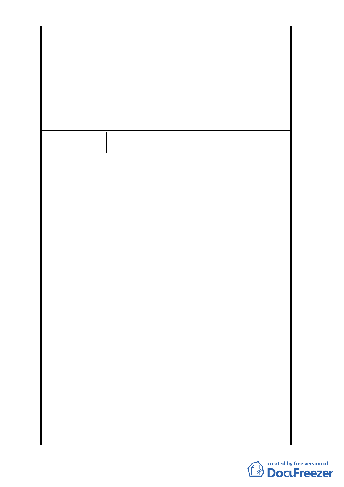

土地使用分區管制內容。
3. 應依照都市計畫委員會專案小組之討論事項內容，詳實
探究歷史資料及當時之情況，來釐清本案容積率，並予
以公告，以保障原計畫全街廓權利人之利益。
4. 本公司堅決反對解除整體開發，市政府若執意逕行核定
，若使本公司受有損害，應予以賠償。
擬建議處
理意見
同編號1回覆內容。
委
決
員
會
議
同編號1。
編
號 2-a
陳情人
京○建設開發股份有限公司
（103.1.22 存證信函）
陳情位置
主旨：請臺北市政府審慎處理解除整體開發變更案，若侵
害本公司之權益，本公司將依法追訴，詳如說明，請
查照。
說明：
一、爰依臺北市政府於民國 80 年 2 月 13 日公告之「修
訂台北市土地使用分區（保護區、農業區除外）計
畫（通盤檢討）案」內有關八德路四段、東寧路、
縱貫鐵路，八德路四段 106 巷所圍地區（原唐榮鐵
工廠）土地使用計畫案」規定，該所圍地區內所有
地主必須捐地百分之三十作為公益使用之公園廣
場，另再捐贈新台幣（下同）貳億貳千萬元闢建公
益使用建物設施即今偶戲博物館，則臺北市政府同
意將該所圍地區由原本之工業區變更為第三種商
陳情理由
業區。
二、此項使用分區由工業區變更為第三種商業區事宜
，對該所圍地區之繁榮及地主權益實有重大助益及
實質上利益，地主均樂觀其成。
三、本公司乃於民國 86 年 11 月間依據臺北市政府要求
代該所圍地區內全體地主捐贈相當於該所圍地區
百分之三十土地予臺北市政府，嗣於民國 92 年 11
月間再代全體地主捐贈貳億貳千萬元給台北市政
府。
四、其間本公司與威京公司依照 80 年 2 月 13 日公告都
市計畫說明書進行整體開發，但因整合過程不順利
，最終經臺北市政府同意分為一二期開發，但市政
府仍依整體開發之約定，要求本公司與威京公司必
須以整個街廓為計算基礎完成捐地三成義務（包括
- 23 -